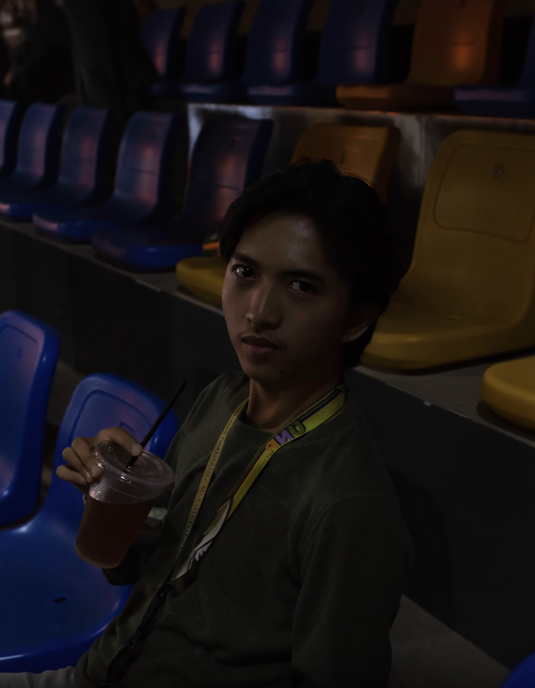

Hi, I'm Jude.
Developer & Designer.
I'm a 3rd-year CS student at UNP under CCIT. I enjoy coding just as much as designing. As the PRO for ACTS, I create our event posters and visual assets using Canva, Photoshop, and Figma. I honestly believe the best ideas happen when you step away from the laptop, so I make sure to stay active on campus and explore outside whenever I can.
About Me
Who is Jude?
I grew up in Malingeb, Bantay, raised by my grandparents while my mom worked in Singapore. Growing up with my twin brother and siblings meant our house was never quiet, but it taught me a lot about patience and looking out for family. To most of my friends, I'm just the loud, approachable guy in the room. But I try to live by a simple idea called "sonder"—the realization that everyone you meet has a life just as complicated and heavy as your own. Because of that, I always drop the jokes and become a quiet, non-judgmental listener whenever my circle needs one.
When school gets too heavy, my comfort routine is pretty simple: a whole tray of Tessie's bihon with iced tea, taking long solo walks to clear my mind, or falling asleep to Kwentong Pambata videos. Looking ahead, my ultimate 5-year goal is to turn all these late nights of debugging into real financial stability, so I can eventually pay it forward and help out others who are going through a hard time.

Beyond Academics
📸 Photography
Taking my camera on quiet solo walks to capture everyday moments before they disappear.
🍜 Comfort Vault
A whole tray of Tessie's bihon and unwinding to Kwentong Pambata.
⛰️ The Inner Circle
Hanging out with my campus crew or talking to my decade-long online friends.
🎮 Screen Time
Playing Valorant or Genshin Impact, and catching up on MCU movies.
Resume & Skills
Education & Experience
BS in Computer Science
University of Northern Philippines
Currently in my 3rd year at the College of Communication and Information Technology.
High School Education
Ilocos Sur National High School
Recipient of the Academic Excellence Award.
Public Relations Officer
Association of Communication and Technology Students (ACTS)
Managing digital publicity, campus tech advocacy, and publication layouts for events.
Public Relations Officer
Computer Science Society (CSS)
Academic Milestones
Capstone Project 1
Foundational academic project demonstrating core technical and problem-solving skills developed throughout the CS curriculum.
View Capstone Info →Core Tech Stack
Featured Work
Capstone Project 1
A comprehensive academic requirement synthesizing software engineering principles, UI/UX design, and database management into a unified technical solution.
Aura MedSpa
A luxury service single-page React web application optimized for smooth UI performance and deployed directly via Vercel.
*Note: This was developed purely as a frontend practice exercise in UI/UX and React, and is not intended for commercial implementation.
UNP Route Optimization
Academic research applying Graph Coloring algorithms to identify high-speed network routing pathways within the UNP campus.
CPU Process Scheduler
Interactive Round-Robin CPU simulator modeling time-quantum queue rotation and live visual execution animations for CSP108.
Image Classification UI
A machine learning web interface built leveraging trained TFLite models for visual categorization as part of an AI coursework project.
ACTS Event Publications
Designed official visual assets, certificates, and event posters for campus events like the IT Olympics and CCIT Founding Anniversary.
Get In Touch
Feel free to reach out for project collaborations, tech discussions, or layout design requests.